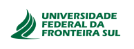
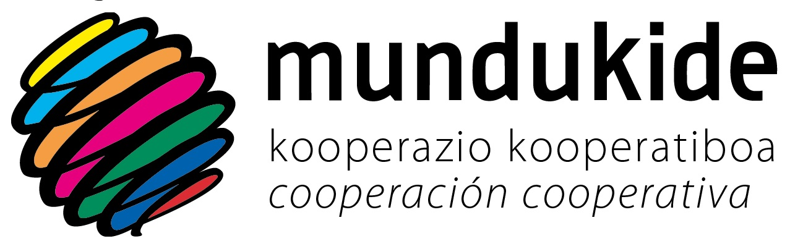
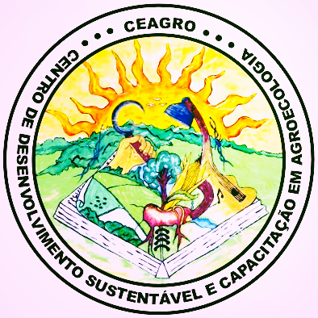
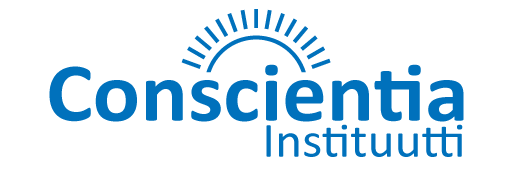
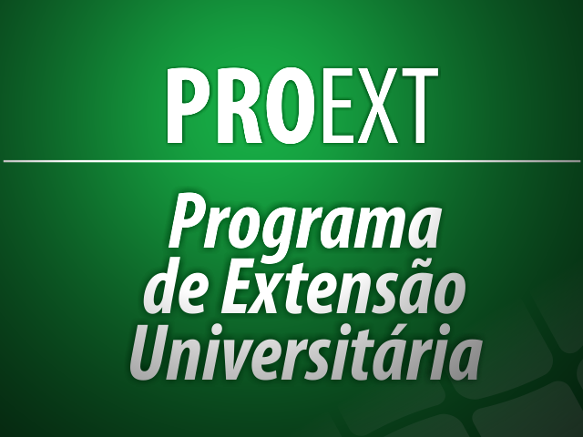

NECOOP
Núcleo de Estudos em Cooperação · UFFS
← Voltar ao site
Links úteis
Instituições parceiras e de referência

UFFS
Universidade Federal da Fronteira Sul
Visitar site →
CNPq
Conselho Nacional de Desenvolvimento Científico e Tecnológico
Visitar site →
Fundação Araucária
Apoio ao desenvolvimento científico e tecnológico do Paraná
Visitar site →

Mundukide
Cooperação cooperativa e desenvolvimento socioeconômico.
Visitar site →

CEAGRO
Centro de Desenvolvimento Sustentável e Capacitação em Agroecologia
Instagram →
Facebook →

Conscientia
Instituto de valorização humana e social
Visitar site →
SENAES
Secretaria Nacional de Economia Popular e Solidária — Ministério do Trabalho e Emprego
Visitar site →

PROEXT
Programa de Extensão Universitária
Visitar site →